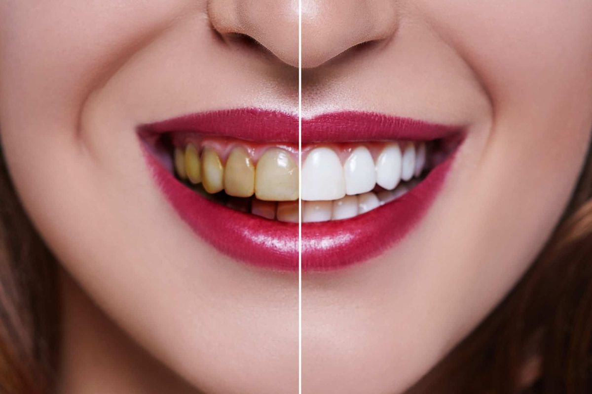
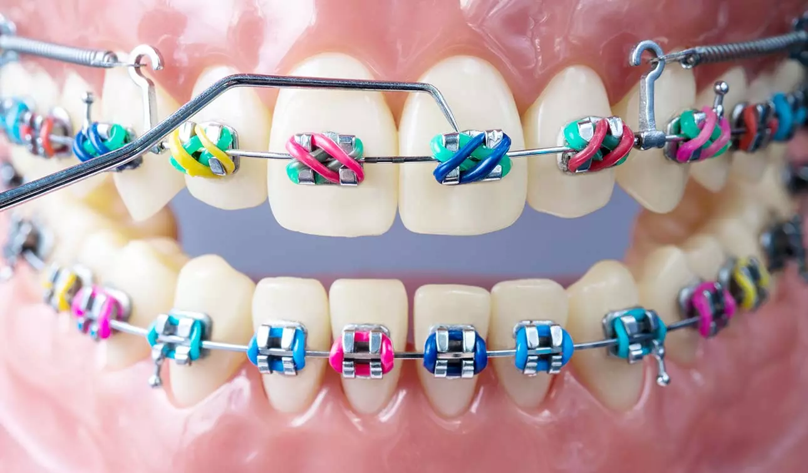
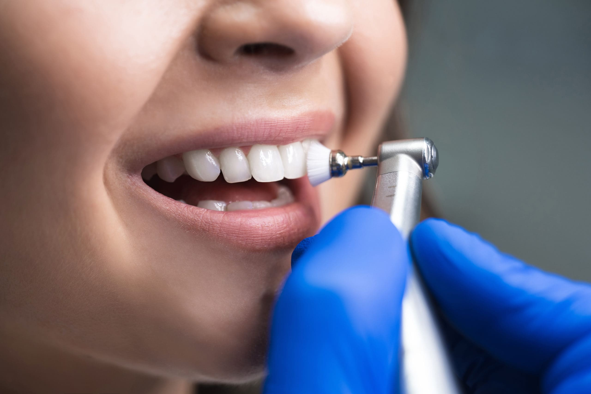
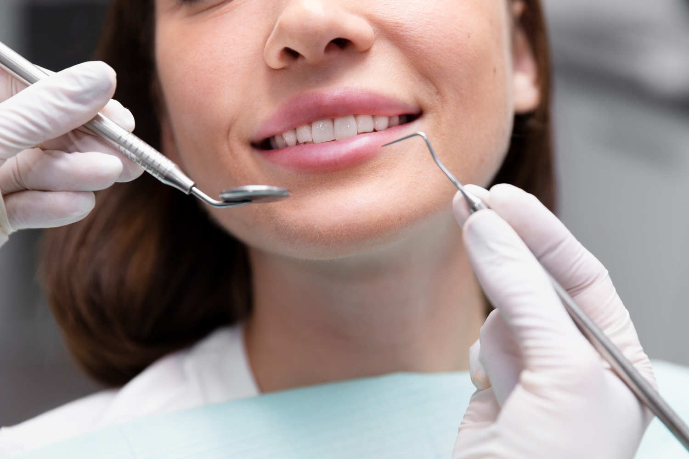

Clareamento dental é um método seguro e eficaz para remover manchas e descolorações dos dentes, oferecido no consultório ou em casa sob supervisão do dentista. Os resultados variam, mas muitos veem melhorias após algumas sessões. É essencial consultar um dentista antes para determinar a adequação do tratamento e receber orientações personalizadas.
Tratamento ortodôntico realinha os dentes e a mandíbula para corrigir problemas de má oclusão, oferecendo opções como aparelhos fixos ou removíveis. A duração do tratamento varia, podendo levar de alguns meses a alguns anos. Consulte um ortodontista para avaliar sua condição e obter um plano de tratamento personalizado.
A limpeza dentária remove placa bacteriana e tártaro, prevenindo cáries, doenças gengivais e mau hálito. Realizada regularmente , contribui para a saúde bucal geral, mantendo os dentes e gengivas saudáveis, além de prevenir problemas mais graves. Agende consultas de limpeza dentária regularmente para garantir um sorriso saudável e radiante.
As consultas gerais são essenciais para a saúde bucal, permitindo a detecção precoce de problemas como cáries, doenças gengivais e outras condições. Durante as consultas realizamos exames detalhados, limpeza e oferecemos orientações personalizadas para cuidados dentários em casa.
